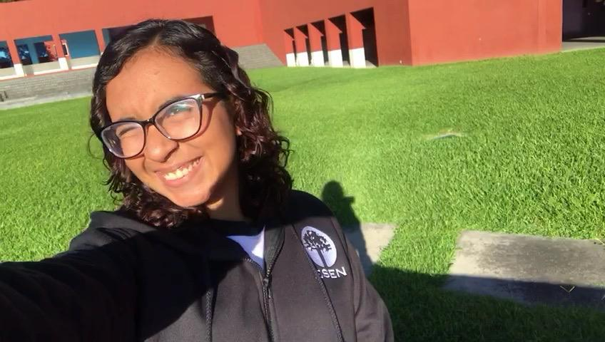
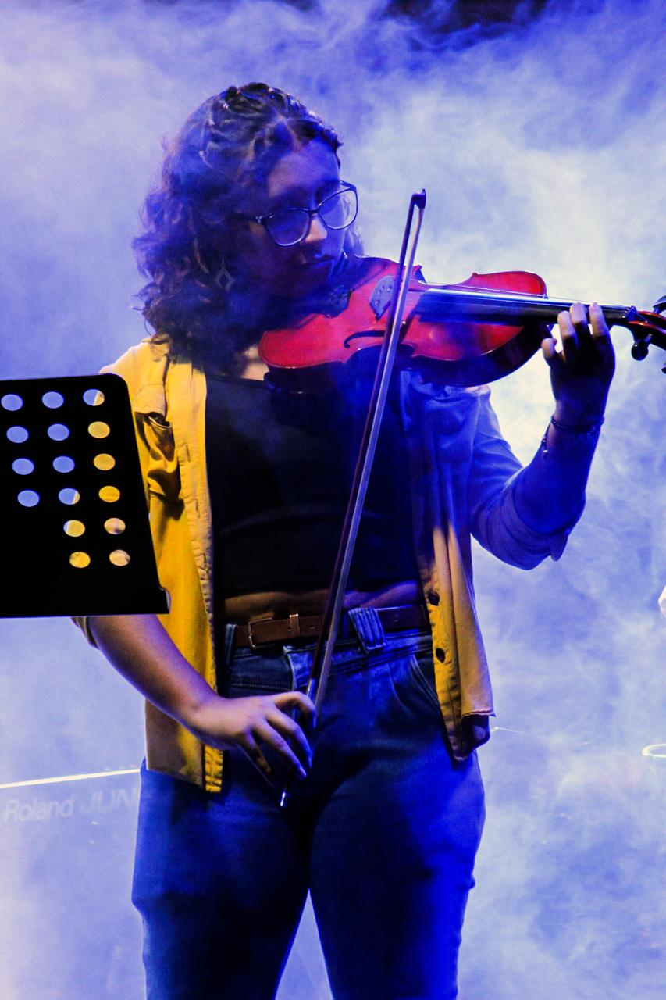
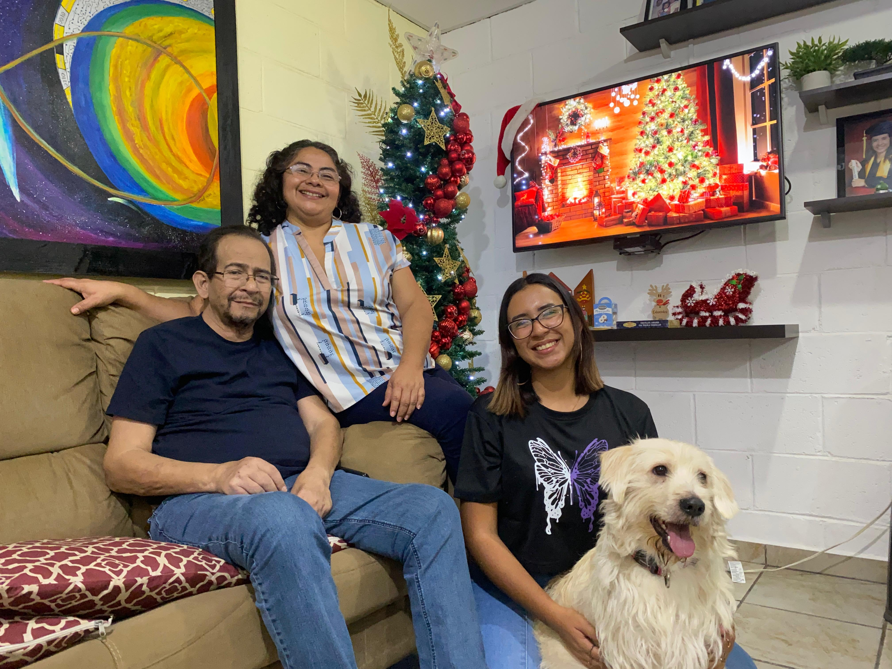
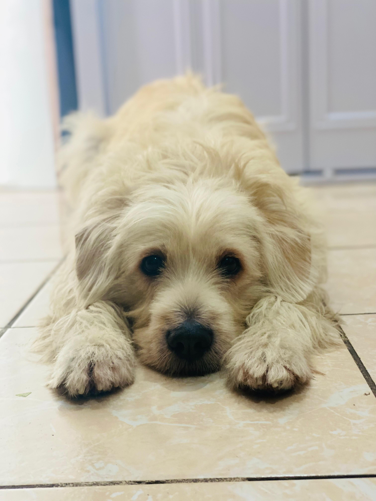
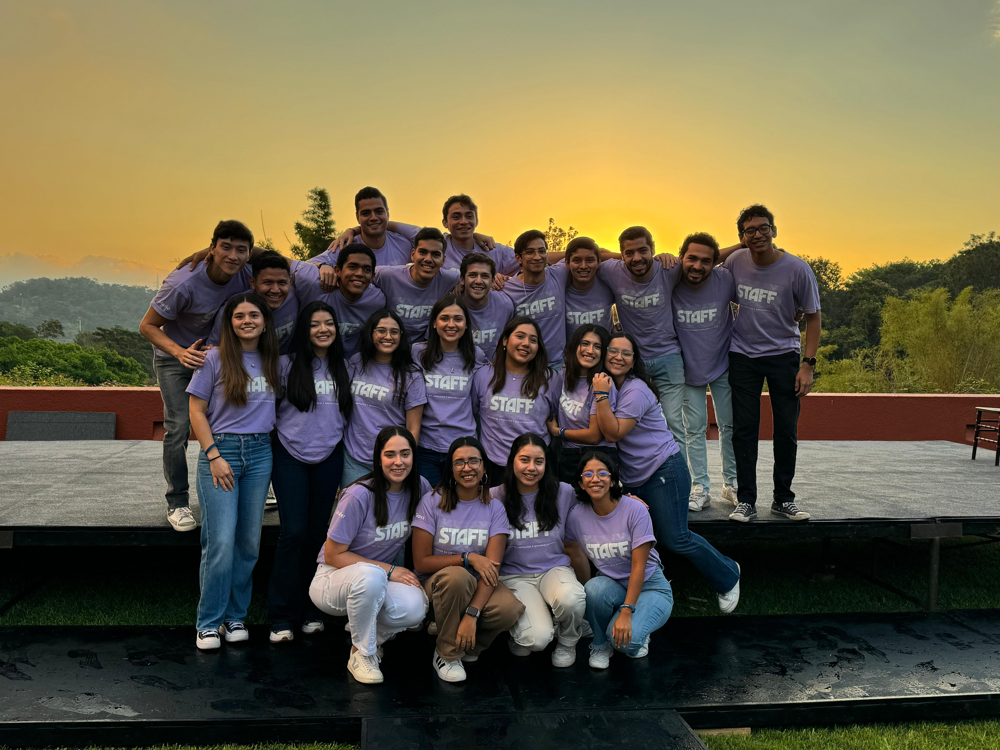

Mi nombre es Giovanna, tengo 20 años y soy estudiante de Ingeniería de Software y Negocios Digitales en la Escuela Superior de Economía y Negocios. El desarrollo web es algo que disfruto desde 2020 y me emociona mucho aprender nuevas tecnologías y mejorar mis habilidades en estas. Soy una persona con múltiples intereses, los cuales tendrán más detalles en la siguiente sección.
La razón por la que estudio esta carrera es porque desde pequeña, mi papá me involucró mucho en el mundo de la informática. Disfruto todos los temas, sobre todo lo relacionado al diseño y desarrollo ya sea web o de aplicaciones.
Comencé a aprender sobre computadores a mis 4 años, ya que mi papá daba clases de informática desde antes de que naciera.
>
La música es una parte esencial de mi vida. Disfruto de diferentes géneros, sobre todo el rock de hace varias décadas.
Otro motivo por el que la música es tan importante en mi vida es porque empecé a aprender piano desde los 4 años. Actualmente no solo toco el piano sino que tambien el violín y soy cantante. Además, estoy en una banda. Entretenerme con algo que amo tanto le dá mas sentido a la vida.
>
Mi familia siempre ha sido pequeña. Mi mamá, mi papá, mi perrita y yo. Siempre hemos sido una familia llena de amor y que se apoya incondicionalmente. Tristemente, hace 3 meses la familia se redujo a solo mi mami, mi perrita y yo tras una larga enfermedad que mi papá tuvo que atravesar. A pesar del dolor de la pérdida, sabemos que nos cuida y tenemos la satisfacción de habernos dado todo el amor posible en vida.
>
Mi perrita Molly está por cumplir 4 años en Enero del próximo año. Es mi primera mascota. Jamás creí que sería posible amar tanto a una mascota.
>
El staff también es una parte super fundamental de mi vida. No solo ha sacado mis habilidades de liderazgo a flote sino que también me ha permitido conocer a personas increbles que ahoran forman parte importante de mi vida. Más que un grupo de amigos se siente como una segunda familia que se apoya incondicionalmente.
>